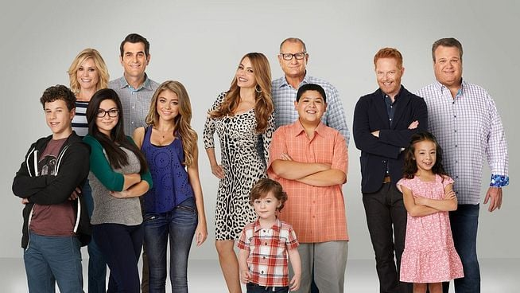

Fatmanur Ağaçbacak
Hakkımda
Merhaba, ben Fatmanur Apğaçbacak. İstanbul'da yaşıyorum. Sitcom dizileri izlemeyi ve macera türündeki kitapları okumayı seviyorum. Web ve oyun geliştirme ile ilgileniyorum.Kendimi bu alanlarda daha çok geliştirmeyi hedefliyorum.
İlgi Alanlarım
- Film
- Lohusa
- Açlık Oyunları
- Yüzüklerin Efendisi
- Dizi
- Kitap
- Dansa Davet - Jean Teule
- Milena'ya Mektuplar - Franz Kafka
- Gece Yarısı Kütüphanesi - Matt Haig
Sevdiğim Diziler
Modern Family

Birbirinden farklı ama birbiriyle ilişkili üç aile, kendilerine özgü komik yollarla zorluklarla ve denemelerle karşı karşıya kalıyor.